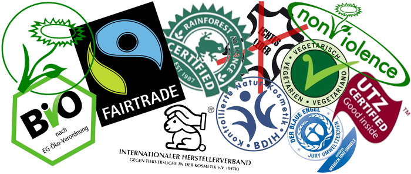

Umsetzung
"Wir Konsumenten entscheiden was auf der Welt passiert,
denn es ist unser Geld mit dem wir die Welt verändern
und zwar mit jedem Einkauf!"
denn es ist unser Geld mit dem wir die Welt verändern
und zwar mit jedem Einkauf!"
Gewaltprävention im 21. Jahrhundert − Die Top 10
In gewaltfreie Produkte investieren
In unserer heutigen Gesellschaft ist es schwer ein gewaltfreies Leben zu führen, da sich hinter unzähligen Produkten Gewalt versteckt. Dennoch kann man sich für eine gewaltfreie Marktwirtschaft engagieren, indem man sich Stück für Stück überlegt, in welche Produkte man sein Geld investiert.Rein pflanzliche Ernährung
Dadurch setzt man das wichtigste Zeichen gegen die Massentierhaltung (98% der Fleischprodukte stammen aus der Massentierhaltung), schützt die Erde vor Verschmutzung, Klimawandel sowie Ausbeutung und setzt sich auch indirekt für die Menschenrechte ein.Fairtrade- und Bio-Produkte
Kinder- und Sklavenarbeit sowie nicht tiergerechte Haltungsformen sind im 21. Jh. noch immer eine der größten globalen Probleme. z.B. bei Kakao, Kaffee, Zigaretten, Kleidung, Spielzeug etc. Leider ist unser Wohlstand zum Teil auf die Ausbeutung der Menschen in den Entwicklungsländern und die Tiere in Tierfabriken aufgebaut.Kleidung und Schuhwerk ohne Leder
Leder ist Pelz, nur ohne Haare. Die Tierhäute stammen fast immer aus Entwicklungsländern. Dort geschehen grausame Dinge mit den oft ausgezehrten Tieren. Die weitere Verarbeitung ist immens umweltschädlich und die Menschen in den Gerbereien werden durch die giftigen Chemikalien oftmals sogar verätzt, entstellt und krank.Tierversuchsfreie, pflanzliche Kosmetika und Pflegeartikel
Tierversuche machen Versprechungen, die sie nicht halten können, auf dem Rücken derer, die sich nicht dagegen wehren können, also Tiere, Patienten und Konsumenten. Nach der Meinung vieler Wissenschaftler sind sie weder notwendig noch ethisch vertretbar sondern eine Sackgasse, die den Fortschritt hemmt.Umweltfreundliches Verhalten
Produkte von ökologisch nachhaltig orientierten Konzernen sowie heimisches Obst und Gemüse kaufen, auf unnötige Verpackungen bzw. Plastiksäcke verzichten, Mülltrennung, etc.Informieren - Woher kommt mein Essen, meine Kleidung? etc.
Woher kommt mein Essen, meine Kleidung, meine Möbel usw. Es gibt hilfreiche Dokumentationen im Internet und im Handel, die uns helfen uns zu informieren. Leider sind viele Informationsquellen durch Lobbyismus und Werbung verzerrt. Denke selbstständig und kritisch.Aktive Gewalt vermeiden
z.B. Mitgefühl statt Egoismus, sich miteinander aussprechen statt beschimpfen, Respekt gegenüber den Anderen, Höflichkeit etc.Nicht Töten
Im Sinne der Gewaltvermeidung sollte man Hobbys und Berufe, die sich dem Töten widmen, möglichst meiden: z.B. Jäger, Fischer, Metzger oder Soldat. Menschen fühlen genauso wie die Tiere Dankbarkeit, Trauer, Kummer, Schmerz etc. und haben die selbe Sehnsucht nach Glück, Liebe und Geborgenheit.Mit offenen Augen und Ohren durch die Welt gehen
Hinschauen und helfen statt wegsehen oder vorübergehen.

Die eigentliche Frage muss sich trotz allem jeder selbst stellen:
Ist es für mich legitim, dass andere Lebewesen
für mein Leben oder meinen Genuss Leid erfahren?

Download PDF "Gewaltlosigkeit im 21.Jh."